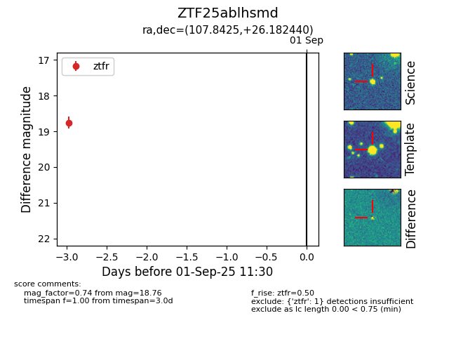

FINK: ZTF25ablhsmd
Lasair: ZTF25ablhsmd
ALeRCE: ZTF25ablhsmd
ZTF25ablhsmd (ztf,fink)
equatorial (ra, dec) = (107.8425,+26.18244)
galactic (l, b) = (191.1556,+15.69798)

last ztfr=18.76
1 ztfr detections